2022年北京市中考数学真题 原卷解析
2022北京中考真题
数 学
第一部分 选择题
一、选择题（共16分，每题2分）第1-8题均有四个选项，符合题意的选项只有一个．
1. 下面几何体中，是圆锥的为（ ）
A.  B.
B.  C.
C.  D.
D. 
【答案】B
【解析】
【分析】观察所给几何体，可以直接得出答案．
【详解】解：A选项为圆柱，不合题意；
B选项为圆锥，符合题意；
C选项为三棱柱，不合题意；
D选项为球，不合题意；
故选B．
【点睛】本题考查常见几何体的识别，熟练掌握常见几何体的特征是解题的关键．圆锥面和一个截它的平面，组成的空间几何图形叫圆锥．
2. 截至2021年12月31日，长江干流六座梯级水电站全年累计发电量达2628．83亿千瓦时，相当于减排二氧化碳约2.2亿吨．将262 883 000 000用科学计数法表示应为（ ）
A.  B.
B.  C.
C.  D.
D. 
【答案】B
【解析】
【分析】将262 883 000 000写成 ，n为正整数的形式即可．
，n为正整数的形式即可．
【详解】解：将262 883 000 000保留1位整数是 ，小数点向左移动了11位，
，小数点向左移动了11位，
∴262 883 000 000 ，
，
故选B．
【点睛】本题考查用科学计数法表示绝对值大于1的数，掌握中n的取值方法是解题的关键．
3. 如图，利用工具测量角，则 的大小为（ ）
的大小为（ ）

A. 30°B. 60°C. 120°D. 150°
【答案】A
【解析】
【分析】利用对顶角相等求解．
【详解】解：量角器测量的度数为30°，
由对顶角相等可得， ．
．
故选A．
【点睛】本题考查量角器的使用和对顶角的性质，掌握对顶角相等是解题的关键．
4. 实数 在数轴上的对应点的位置如图所示，下列结论中正确的是（ ）
在数轴上的对应点的位置如图所示，下列结论中正确的是（ ）

A.  B.
B.  C.
C.  D.
D. 
【答案】D
【解析】
【分析】根据数轴上的点的特征即可判断．
【详解】解：点a在-2的右边，故a>-2，故A选项错误；
点b在1的右边，故b>1，故B选项错误；
b在a的右边，故b>a，故C选项错误；
由数轴得：-2<a<-1.5，则1.5<-a<2，1<b<1.5，则，故D选项正确，
故选：D．
【点睛】本题考查了数轴上的点，熟练掌握数轴上点的特征是解题的关键．
5. 不透明的袋子中装有红、绿小球各一个，除颜色外两个小球无其他差别，从中随机摸出一个小球，放回并摇匀，再从中随机摸出一个小球，那么第一次摸到红球、第二次摸到绿球的概率是（ ）
A.  B.
B.  C.
C.  D.
D. 
【答案】A
【解析】
【分析】首先根据题意画出树状图，由树状图求得所有等可能的结果与第一次摸到红球，第二次摸到绿球的情况，然后利用概率公式求解即可求得答案．
【详解】解：画树状图得：

∵共有4种等可能的结果，第一次摸到红球，第二次摸到绿球有1种情况，
∴第一次摸到红球，第二次摸到绿球的概率为，
故选：A．
【点睛】本题考查了画树状法或列表法求概率，列出所有等可能的结果是解决本题的关键．
6. 若关于 的一元二次方程
的一元二次方程 有两个相等的实数根，则实数
有两个相等的实数根，则实数 的值为（ ）
的值为（ ）
A.  B.
B.  C. D.
C. D. 
【答案】C
【解析】
【分析】利用方程有两个相等的实数根，得到∆=0，建立关于m的方程，解答即可．
【详解】∵一元二次方程有两个相等的实数根，
∴∆=0，
∴
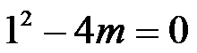
，解得
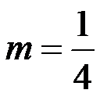
，故C正确．故选：C．
【点睛】此题考查利用一元二次方程的根的情况求参数，一元二次方程的根有三种情况：有两个不等的实数根时∆>0；当一元二次方程有两个相等的实数根时，∆=0；当方程没有实数根时，∆<0，正确掌握此三种情况是正确解题的关键．
7. 图中的图形为轴对称图形，该图形的对称轴的条数为（ ）
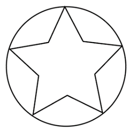
A.  B.
B.  C.
C.  D.
D. 
【答案】D
【解析】
【分析】根据题意，画出该图形的对称轴，即可求解．
【详解】解∶如图，
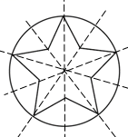
一共有5条对称轴．
故选：D
【点睛】本题主要考查了轴对称图形，熟练掌握若一个图形沿着一条直线折叠后两部分能完全重合，这样的图形就叫做轴对称图形，这条直线叫做对称轴是解题的关键．
8. 下面的三个问题中都有两个变量：
①汽车从A地匀速行驶到B地，汽车的剩余路程y与行驶时间x；
②将水箱中的水匀速放出，直至放完，水箱中的剩余水量y与放水时间x；
③用长度一定的绳子围成一个矩形，矩形的面积y与一边长x，其中，变量y与变量x之间的函数关系可以利用如图所示的图象表示的是（ ）
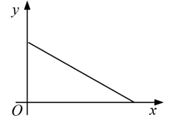
A. ①②B. ①③C. ②③D. ①②③
【答案】A
【解析】
【分析】由图象可知：当y最大时，x为0，当x最大时，y为零，即y随x的增大而减小，再结合题意即可判定．
【详解】解：①汽车从A地匀速行驶到B地，汽车的剩余路程y随行驶时间x的增大而减小，故①可以利用该图象表示；
②将水箱中的水匀速放出，直至放完，水箱中的剩余水量y随放水时间x的增大而减小，故②可以利用该图象表示；
③设绳子的长为L，一边长x，则另一边长为
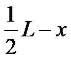
，则矩形的面积为：
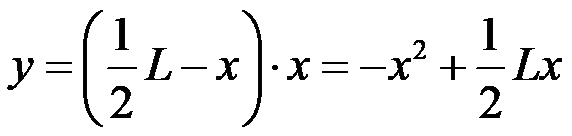
，故③不可以利用该图象表示；
故可以利用该图象表示的有：①②，
故选：A．
【点睛】本题考查了函数图象与函数的关系，采用数形结合的思想是解决本题的关键．
第二部分 非选择题
二、填空题（共16分，每题2分）
9. 若
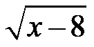
在实数范围内有意义，则实数x的取值范围是___________．【答案】x≥8##
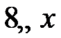
【解析】
【分析】根据二次根式有意义的条件，可得x-8≥0，然后进行计算即可解答．
【详解】解：由题意得：
x-8≥0，
解得：x≥8．
故答案为：x≥8．
【点睛】本题考查了二次根式有意义的条件，熟练掌握二次根式
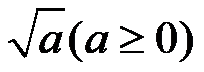
是解题的关键．10. 分解因式：
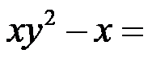
______．【答案】
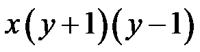
【解析】
【分析】首先提取公因式，再根据平方差公式计算，即可得到答案．
【详解】
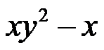
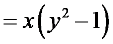
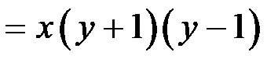
故答案为：．
【点睛】本题考查了因式分解的知识；解题的关键是熟练掌握平方差公式的性质，从而完成求解．
11. 方程
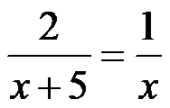
的解为___________．【答案】x=5
【解析】
【分析】观察可得最简公分母是x(x+5)，方程两边乘最简公分母，可以把分式方程转化为整式方程求解，再进行检验即可得解．
【详解】解：
方程的两边同乘x(x+5),得：2x=x+5, 解得：x=5, 经检验：把x=5代入x(x+5)=50≠0. 故原方程的解为：x=5
【点睛】此题考查了分式方程的求解方法，注意掌握转化思想的应用，注意解分式方程一定要验根，
12. 在平面直角坐标系 中，若点
中，若点
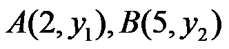
在反比例函数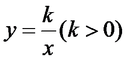
的图象上，则 ______
______ （填“>”“=”或“<”）
（填“>”“=”或“<”）【答案】＞
【解析】
【分析】根据反比例函数的性质，k>0，在每个象限内，y随x的增大而减小，进行判断即可．
【详解】解：∵k>0，
∴在每个象限内，y随x的增大而减小，
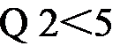
，∴>．
故答案为：>．
【点睛】本题考查了反比例函数的性质，熟练掌握函数的性质是解决问题的关键．
13. 某商场准备进400双滑冰鞋，了解了某段时间内销售的40双滑冰鞋的鞋号，数据如下：
鞋号 | 35 | 36 | 37 | 38 | 39 | 40 | 41 | 42 | 43 |
销售量/双 | 2 | 4 | 5 | 5 | 12 | 6 | 3 | 2 | 1 |
根据以上数据，估计该商场进鞋号需求最多的滑冰鞋的数量为________双．
【答案】120
【解析】
【分析】根据题意得：39码的鞋销售量为12双，再用400乘以其所占的百分比，即可求解．
【详解】解：根据题意得：39码的鞋销售量为12双，销售量最高，
∴该商场进鞋号需求最多的滑冰鞋的数量为
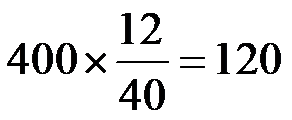
双．故答案为：120
【点睛】本题主要考查了用样本估计总体，根据题意得到39码的鞋销售量为12双，销售量最高是解题的关键．
14. 如图，在 中，
中， 平分
平分
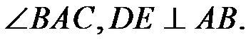
若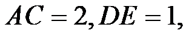
则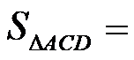
____．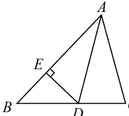
【答案】1
【解析】
【分析】作于点F，由角平分线的性质推出
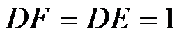
，再利用三角形面积公式求解即可．【详解】解：如图，作于点F，
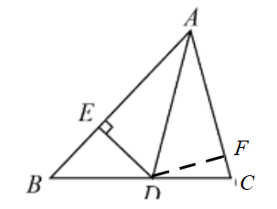
∵平分，，，
∴，
∴
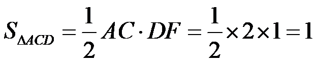
．故答案为：1．
【点睛】本题考查角平分线的性质，通过作辅助线求出三角形ACD中AC边的高是解题的关键．
15. 如图，在矩形 中，若
中，若
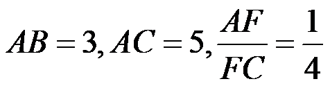
，则 的长为_______．
的长为_______．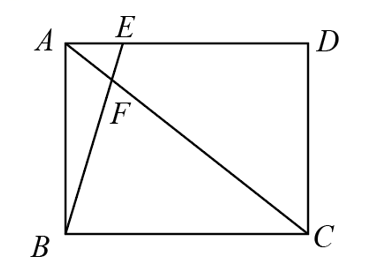
【答案】1
【解析】
【分析】根据勾股定理求出BC，以及平行线分线段成比例进行解答即可．
【详解】解：在矩形中：， ，
，
∴
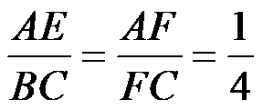
，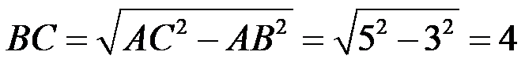
，∴
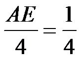
，∴
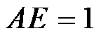
，故答案为：1．
【点睛】此题考查了勾股定理以及平行线分线段成比例，掌握平行线分线段成比例是解题的关键．
16. 甲工厂将生产的I号、II号两种产品共打包成5个不同的包裹，编号分别为A，B，C，D，E，每个包裹的重量及包裹中I号、II号产品的重量如下：
包裹编号 | I号产品重量/吨 | II号产品重量/吨 | 包裹的重量/吨 |
A | 5 | 1 | 6 |
B | 3 | 2 | 5 |
C | 2 | 3 | 5 |
D | 4 | 3 | 7 |
E | 3 | 5 | 8 |
甲工厂准备用一辆载重不超过19.5吨的货车将部分包裹一次运送到乙工厂．
（1）如果装运的I号产品不少于9吨，且不多于11吨，写出一中满足条件的装运方案________（写出要装运包裹的编号）；
（2）如果装运的I号产品不少于9吨，且不多于11吨，同时装运的II号产品最多，写出满足条件的装运方案________（写出要装运包裹的编号）．
【答案】 ①. ABC（或ABE或AD或ACD或BCD） ②. ABE或BCD
【解析】
【分析】（1）从A，B，C，D，E中选出2个或3个，同时满足I号产品不少于9吨，且不多于11吨，总重不超过19.5吨即可；
（2）从（1）中符合条件的方案中选出装运II号产品最多的方案即可．
【详解】解：（1）根据题意，
选择ABC时，装运的I号产品重量为：
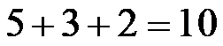
（吨），总重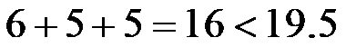
（吨），符合要求；选择ABE时，装运的I号产品重量为：
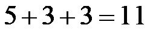
（吨），总重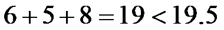
（吨），符合要求；选择AD时，装运 I号产品重量为：
I号产品重量为：
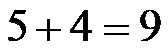
（吨），总重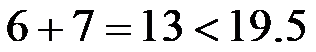
（吨），符合要求；选择ACD时，装运的I号产品重量为：
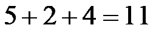
（吨），总重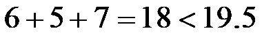
（吨），符合要求；选择BCD时，装运的I号产品重量为：
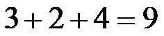
（吨），总重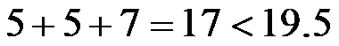
（吨），符合要求；选择DCE时，装运的I号产品重量为：
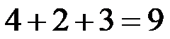
（吨），总重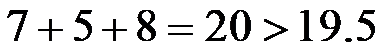
（吨），不符合要求；选择BDE时，装运的I号产品重量为：
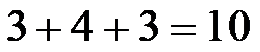
（吨），总重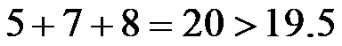
（吨），不符合要求；综上，满足条件的装运方案有ABC或ABE或AD或ACD或BCD．
故答案为：ABC（或ABE或AD或ACD或BCD）．
（2）选择ABC时，装运的II号产品重量为：
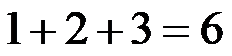
（吨）；选择ABE时，装运的II号产品重量为：
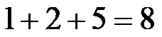
（吨）；选择AD时，装运的II号产品重量为：
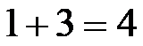
（吨）；选择ACD时，装运的II号产品重量为：（吨）；
选择BCD时，装运的II号产品重量为：（吨）；
故答案为：ABE或BCD．
【点睛】本题考查方案的选择，读懂题意，尝试不同组合时能否同时满足题目要求的条件是解题的关键．
三、解答题（共68分，第17-20题，每题5分，第21题6分，第22题5分，第23-24题，每题6分，第25题5分，第26题6分，第27-28题，每题7分）解答应写出文字说明、演算步骤或证明过程．
17. 计算：
【答案】4
【解析】
【分析】根据零次幂、特殊角的正弦值、二次根式和去绝对值即可求解．
【详解】解：

 ．
．
【点睛】本题考查了实数的混合运算，掌握零次幂、特殊角的正弦值、二次根式的化简及去绝对值是解题的关键．
18. 解不等式组：
【答案】
【解析】
【分析】分别解两个一元一次不等式，再求交集即可．
【详解】解：
解不等式①得 ，
，
解不等式②得 ，
，
故所给不等式组的解集为：．
【点睛】本题考查解一元一次不等式组，属于基础题，正确计算是解题的关键．
19. 已知 ，求代数式
，求代数式 的值．
的值．
【答案】５
【解析】
【分析】先根据，得出 ，将变形为
，将变形为 ，最后代入求值即可．
，最后代入求值即可．
【详解】解：∵，
∴，
∴


【点睛】本题主要考查了代数式求值，完全平方公式，单项式乘多项式，将变形为，是解题的关键．
20. 下面是证明三角形内角和定理的两种添加辅助线的方法，选择其中一种，完成证明．
 三角形内角和定理：三角形三个内角和等于180°， 三角形内角和定理：三角形三个内角和等于180°，
已知：如图，, 求证： |
方法一 证明：如图，过点A作 
| 方法二 证明：如图，过点C作  |
【答案】答案见解析
【解析】
【分析】选择方法一，过点 作
作 ，依据平行线的性质，即可得到
，依据平行线的性质，即可得到 ，
， ，再根据平角的定义，即可得到三角形的内角和为
，再根据平角的定义，即可得到三角形的内角和为 ．
．
【详解】证明：过点作，
则，． 两直线平行，内错角相等）
两直线平行，内错角相等）
 点
点 ，，
，， 在同一条直线上，
在同一条直线上，
 ．（平角的定义）
．（平角的定义）
 ．
．
即三角形的内角和为．
【点睛】本题主要考查了平行线的性质以及三角形内角和定理的运用，熟练掌握平行线的性质是解题的关键．
21. 如图，在 中，
中， 交于点
交于点 ，点
，点 在
在 上，
上， ．
．
（1）求证：四边形 是平行四边形；
是平行四边形；
（2）若 求证：四边形是菱形．
求证：四边形是菱形．
【答案】（1）见解析 （2）见解析
【解析】
【分析】（1）先根据四边形ABCD为平行四边形，得出，，再根据，得出，即可证明结论；
（2）先证明，得出，证明四边形ABCD为菱形，得出，即可证明结论．
【小问1详解】
证明：∵四边形ABCD为平行四边形，
∴，，
∵，
∴，
即，
∴四边形是平行四边形．
【小问2详解】
∵四边形ABCD为平行四边形，
∴，
∴，
∵
∴，
∴，
∴四边形ABCD为菱形，
∴，
即，
∵四边形是平行四边形，
∴四边形是菱形．
【点睛】本题主要考查了平行四边形的性质和性质，菱形的判定和性质，平行线的性质，熟练掌握菱形和平行四边形的判定方法，是解题的关键．
22. 在平面直角坐标系中，函数的图象经过点，，且与 轴交于点．
轴交于点．
（1）求该函数的解析式及点的坐标；
（2）当时，对于的每一个值，函数的值大于函数的值，直接写出 的取值范围．
的取值范围．
【答案】（1），
（2）
【解析】
【分析】（1）利用待定系数法即可求得函数解析式，当 时，求出即可求解．
时，求出即可求解．
（2）根据题意结合解出不等式即可求解．
【小问1详解】
解：将，代入函数解析式得，
，解得，
∴函数解析式为：，
当时，得，
∴点A的坐标为．
【小问2详解】
由题意得，
，即，
又由，得，
解得，
∴的取值范围为．
【点睛】本题考查了待定系数法求函数解析式及解不等式，熟练掌握待定系数法求函数解析式及函数的性质是解题的关系．
23. 某校举办“歌唱祖国”演唱比赛，十位评委对每位同学的演唱进行现场打分，对参加比赛的甲、乙、丙三位同学得分的数据进行整理、描述和分析，下面给出了部分信息．
a．甲、乙两位同学得分的折线图：

b．丙同学得分：
10，10，10，9，9，8，3，9，8，10
c．甲、乙、丙三位同学得分的平均数：
根据以上信息，回答下列问题：
（1）求表中m的值；
（2）在参加比赛的同学中，如果某同学得分的10个数据的方差越小，则认为评委对该同学演唱的评价越一致．据此推断：甲、乙两位同学中，评委对_________的评价更一致（填“甲”或“乙”）；
（3）如果每位同学的最后得分为去掉十位评委打分中的一个最高分和一个最低分后的平均分，最后得分越高，则认为该同学表现越优秀．据此推断：在甲、乙、丙三位同学中，表现最优秀的是_________（填“甲”“乙”或“丙”）．
【答案】（1）
（2）甲 （3）乙
【解析】
【分析】（1）根据平均数的定义求出丙的平均数即可求解．
（2）根据方差的计算方法先算出甲乙的方差，再进行比较即可求解．
（3）按去掉一个最高分和一个最低分后分别计算出甲乙丙的平均分，再进行比较即可求解．
【小问1详解】
解：丙的平均数： ，
，
则 ．
．
【小问2详解】
 ，
，
 ，
，
 ，
，
∴甲、乙两位同学中，评委对甲的评价更一致，
故答案为：甲．
【小问3详解】
由题意得，去掉一个最高分和一个最低分后的平均分为：
甲： ，
，
乙： ，
，
丙： ，
，
∵去掉一个最高分和一个最低分后乙的平均分最高，
因此最优秀的是乙，
故答案为：乙．
【点睛】本题考查了折线统计图、中位数、方差及平均数，理解折线统计图，从图中获取信息，掌握中位数、方差及去掉一个最高分和一个最低分后的平均分的求法是解题的关键．
24. 如图， 是
是 的直径，
的直径， 是的一条弦，
是的一条弦， 连接
连接
（1）求证：
（2）连接 ,过点
,过点 作
作 交的延长线于点，延长
交的延长线于点，延长 交于点
交于点 ，若为的中点，求证：直线
，若为的中点，求证：直线 为的切线．
为的切线．
【答案】（1）答案见解析
（2）答案见解析
【解析】
【分析】（1）设交于点 ，连接
，连接 ，证明 ，故可得 ，于是 ，即可得到；
，证明 ，故可得 ，于是 ，即可得到；
（2）连接，解出，根据为直径得到，进而得到，即可证明，故可证明直线为的切线．
【小问1详解】
证明：设交于点，连接，
由题可知，
，，
，
，
，
，
，
，
；
【小问2详解】
证明：
连接，
，
，
同理可得：,，
∵点H是CD的中点，点F是AC的中点，
，
，
，
，
为的直径，
，
，
，
，
，
，
 直线为的切线．
直线为的切线．
【点睛】本题主要考查三角形全等的判定与性质，同弧所对的圆周角相等，圆周角定理，直线平行的判定与性质，三角形的内角和公式，证明三角形全等以及证明平行线是解题的关键．
25. 单板滑雪大跳台是北京冬奥会比赛项目之一，举办场地为首钢滑雪大跳台，运动员起跳后的飞行路线可以看作是抛物线的一部分，建立如图所示的平面直角坐标系，从起跳到着陆的过程中，运动员的竖直高度（单位：m）与水平距离（单位：m）近似满足函数关系 ．
．

某运动员进行了两次训练．
（1）第一次训练时，该运动员的水平距离与竖直高度的几组数据如下：
水平距离x/m | 0 | 2 | 5 | 8 | 11 | 14 |
竖直高度y/m | 20.00 | 21.40 | 22.75 | 23.20 | 22.75 | 21.40 |
根据上述数据，直接写出该运动员竖直高度的最大值，并求出满足的函数关系
（2）第二次训练时，该运动员的竖直高度y与水平距离x近似满足函数关系 记该运动员第一次训练的着陆点的水平距离为d1，第二次训练的着陆点的水平距离为
记该运动员第一次训练的着陆点的水平距离为d1，第二次训练的着陆点的水平距离为 ，则
，则 ______（填“>”“=”或“<”）．
______（填“>”“=”或“<”）．
【答案】（1）23.20m；
（2）
【解析】
【分析】（1）先根据表格中的数据找到顶点坐标，即可得出h、k的值，运动员竖直高度的最大值；将表格中除顶点坐标之外的一组数据代入函数关系式即可求出a的值，得出函数解析式；
（2）着陆点的纵坐标为 ，分别代入第一次和第二次的函数关系式，求出着陆点的横坐标，用t表示出和，然后进行比较即可．
，分别代入第一次和第二次的函数关系式，求出着陆点的横坐标，用t表示出和，然后进行比较即可．
【小问1详解】
解：根据表格中的数据可知，抛物线的顶点坐标为： ，
，
∴ ，
， ，
，
即该运动员竖直高度的最大值为23.20m，
根据表格中的数据可知，当时， ，代入
，代入 得：
得：
 ，解得：
，解得： ，
，
∴函数关系关系式为：．
【小问2详解】
设着陆点的纵坐标为，则第一次训练时， ，
，
解得： 或
或 ，
，
∴根据图象可知，第一次训练时着陆点的水平距离 ，
，
第二次训练时， ，
，
解得： 或
或 ，
，
∴根据图象可知，第二次训练时着陆点的水平距离 ，
，
∵ ，
，
∴ ，
，
∴ ．
．
故答案为：．
【点睛】本题主要考查了二次函数的应用，待定系数法求函数关系式，设着陆点的纵坐标为，用t表示出和，是解题的关键．
26. 在平面直角坐标系中，点 在抛物线
在抛物线 上，设抛物线的对称轴为
上，设抛物线的对称轴为
（1）当 时，求抛物线与y轴交点坐标及的值；
时，求抛物线与y轴交点坐标及的值；
（2）点 在抛物线上，若
在抛物线上，若 求的取值范围及
求的取值范围及 的取值范围．
的取值范围．
【答案】（1）（0，2）；2
（2）取值范围为 ，的取值范围为
，的取值范围为
【解析】
【分析】（1）当x=0时，y=2，可得抛物线与y轴交点的坐标；再根据题意可得点关于对称轴为 对称，可得t的值，即可求解；
对称，可得t的值，即可求解；
（2）抛物线与y轴交点关于对称轴的对称点坐标为（2t，c），根据抛物线的图象和性质可得当 时，y随x的增大而减小，当
时，y随x的增大而减小，当 时，y随x的增大而增大，然后分两种情况讨论：当点
时，y随x的增大而增大，然后分两种情况讨论：当点 ，点
，点 ，（2t，c）均在对称轴的右侧时；当点在对称轴的左侧，点，（2t，c）均在对称轴的右侧时，即可求解．
，（2t，c）均在对称轴的右侧时；当点在对称轴的左侧，点，（2t，c）均在对称轴的右侧时，即可求解．
【小问1详解】
解：当 时，
时， ，
，
∴当x=0时，y=2，
∴抛物线与y轴交点的坐标为（0，2）；
∵ ，
，
∴点关于对称轴为对称，
∴ ；
；
【小问2详解】
解：当x=0时，y=c，
∴抛物线与y轴交点坐标为（0，c），
∴抛物线与y轴交点关于对称轴的对称点坐标为（2t，c），
∵ ，
，
∴当时，y随x增大而减小，当时，y随x的增大而增大，
当点，点，（2t，c）均在对称轴的右侧时，  ，
，
∵1＜3，
∴2t＞3，即 （不合题意，舍去），
（不合题意，舍去），
当点在对称轴的左侧，点，（2t，c）均在对称轴的右侧时，点 在对称轴的右侧，
在对称轴的右侧， ，
，
此时点到对称轴的距离大于点到对称轴的距离，
∴ ，解得：
，解得： ，
，
∵1＜3，
∴2t＞3，即，
∴，
∵，，对称轴为，
∴ ，
，
∴ ，解得：，
，解得：，
∴的取值范围为，的取值范围为．
【点睛】本题主要考查了二次函数的图象和性质，熟练掌握二次函数的图象和性质是解题的关键．
27. 在中， ，D为内一点，连接
，D为内一点，连接 ，
， 延长到点，使得
延长到点，使得
（1）如图1，延长 到点，使得
到点，使得 ，连接
，连接 ，
， 若
若 ，求证：
，求证： ；
；
（2）连接，交的延长线于点，连接 ，依题意补全图2，若
，依题意补全图2，若 ，用等式表示线段与的数量关系，并证明．
，用等式表示线段与的数量关系，并证明．
【答案】（1）见解析 （2）；证明见解析
【解析】
【分析】（1）先利用已知条件证明，得出，推出，再由即可证明；
（2）延长BC到点M，使CM＝CB，连接EM，AM，先证，推出，通过等量代换得到，利用平行线的性质得出，利用直角三角形斜边中线等于斜边一半即可得到．
【小问1详解】
证明：在和中，
，
∴ ，
∴ ，
∴ ，
∵，
∴．
【小问2详解】
解：补全后的图形如图所示，，证明如下：
延长BC到点M，使CM＝CB，连接EM，AM，
∵，CM＝CB，
∴ 垂直平分BM，
∴，
在和中，
，
∴ ，
∴ ，，
∵，
∴ ，
∴ ，
∵，
∴ ，
∴ ，即，
∵，
∴ ，
∴ ．
【点睛】本题考查全等三角形的判定与性质，垂直平分线的性质，平行线的判定与性质，勾股定理的逆用，直角三角形斜边中线的性质等，第二问有一定难度，正确作辅助线，证明是解题的关键．
28. 在平面直角坐标系中，已知点 对于点
对于点 给出如下定义：将点向右
给出如下定义：将点向右 或向左
或向左 平移
平移 个单位长度，再向上
个单位长度，再向上 或向下
或向下 平移
平移 个单位长度，得到点
个单位长度，得到点 ，点关于点
，点关于点 的对称点为
的对称点为 ，称点为点的“对应点”．
，称点为点的“对应点”．
（1）如图，点 点在线段
点在线段 的延长线上，若点
的延长线上，若点 点为点的“对应点”．
点为点的“对应点”．
①在图中画出点；
②连接 交线段
交线段 于点
于点 求证：
求证：
（2）的半径为1， 是上一点，点在线段上，且
是上一点，点在线段上，且 ，若为外一点，点为点的“对应点”，连接
，若为外一点，点为点的“对应点”，连接 当点在上运动时直接写出
当点在上运动时直接写出 长的最大值与最小值的差（用含的式子表示）
长的最大值与最小值的差（用含的式子表示）
【答案】（1）见解析 （2）
【解析】
【分析】（1）①先根据定义和求出点的坐标，再根据点关于点的对称点为求出点Q的坐标；②延长ON至点，连接AQ，利用AAS证明，得到，再计算出OA，OM，ON，即可求出；
（2）连接PO并延长至S，使，延长SQ至T，使，结合对称的性质得出NM为的中位线，推出，得出，则．
【小问1详解】
解：①点Q如下图所示．
∵点，
∴点向右平移1个单位长度，再向上平移1个单位长度，得到点，
∴，
∵点关于点的对称点为，，
∴点的横坐标为：，纵坐标为：，
∴点，在坐标系内找出该点即可；
②证明：如图延长ON至点，连接AQ，
∵ ，
∴，
在与中，
，
∴，
∴，
∵ ，，，
∴，，，
∴，
∴，
∴；
【小问2详解】
解：如图所示，
连接PO并延长至S，使，延长SQ至T，使，
∵，点向右或向左平移个单位长度，再向上或向下平移个单位长度，得到点，
∴，
∵点关于点的对称点为，
∴，
又∵，
∴OM∥ST，
∴NM为的中位线，
∴，，
∵，
∴，
∴，
在中，，
结合题意，，，
∴，
即长的最大值与最小值的差为．
【点睛】本题考查点的平移，对称的性质，全等三角形的判定，两点间距离，中位线的性质及线段的最值问题，第2问难度较大，根据题意，画出点Q和点的轨迹是解题的关键．